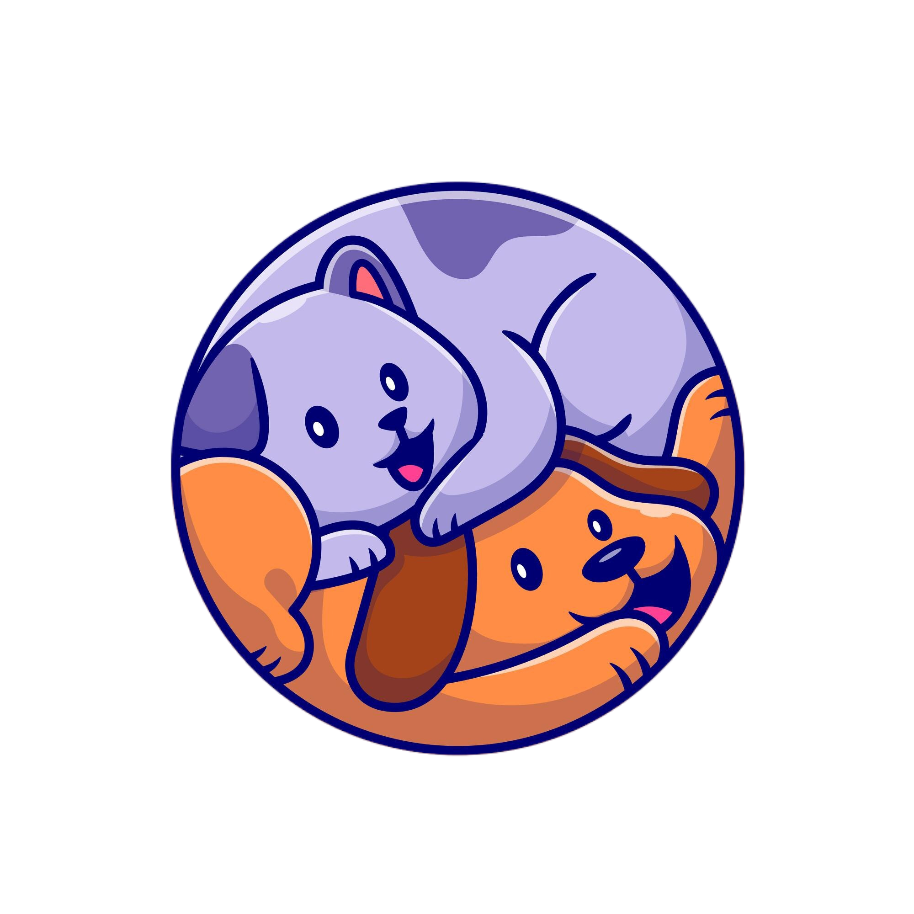

Bem vindo à VetClin Veterinária!
Cuidar de quem nos dá tanto amor é a nossa maior missão.
Serviços de Saúde Animal
Clínica Cirúrgica
Clínica especializada em cirurgia veterinária na Região dos Lagos. Há 10 anos realizando um trabalho de excelência.
Ortopedia
A locomoção faz parte da qualidade de vida dos pets. A ortopedia em pequenos animais envolve a realização de exames e técnicas que vão identificar a lesão e o grau em que se encontra.
Endoscopia
Um procedimento minimamente invasivo, seguro e com um tempo de duração relativamente reduzido. Utilizada no diagnóstico e tratamento de uma série de doenças encontradas em cães, gatos e outras espécies animais.